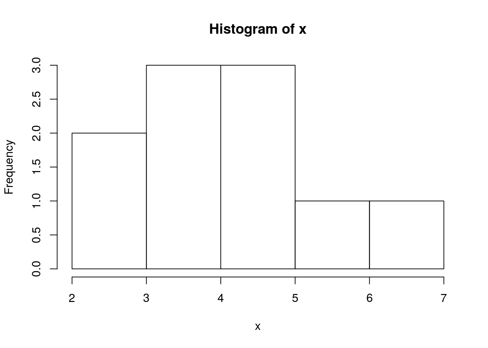
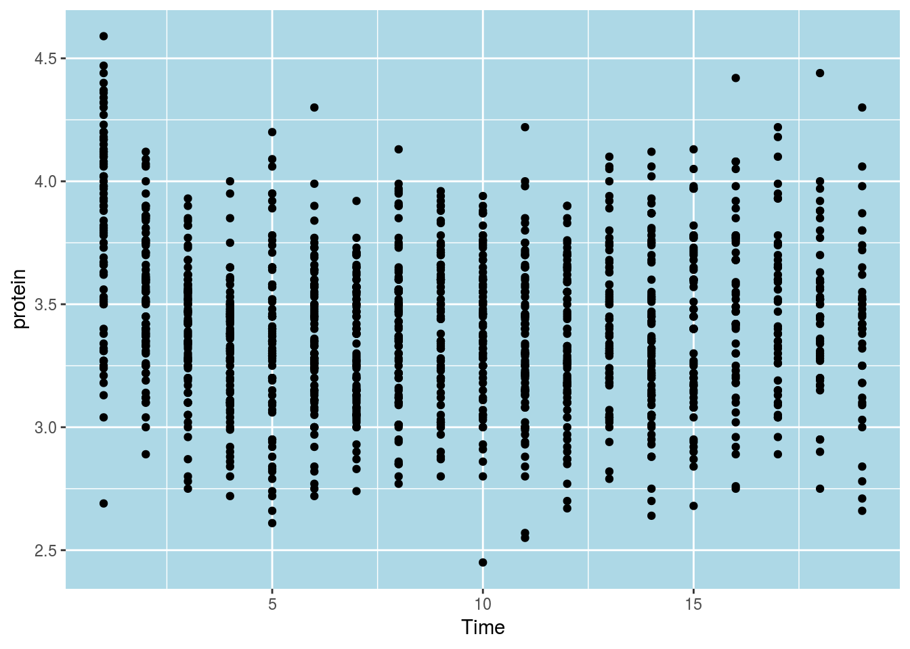

Chapter 3 R Basics
We now start with the basics of R. If you have any experience at all with R, you can probably skip this section.
First, make sure you work with the RStudio IDE. Some useful pointers for this IDE include: - Ctrl+return to run lines from editor. - alt+shift+k for RStudio keyboard shortcuts. - Ctrl+alt+j to navigate between sections - tab for auto-completion - Ctrl+1 to skip to editor. - Ctrl+2 to skip to console. - Ctrl+8 to skip to the environment list. - Code Folding: - alt+l collapse chunk. - alt+shift+l unfold chunk. - alt+o collapse all. - alt+shift+o unfold all.
3.1 Simple calculator
R can be used as a simple calculator.
10+5## [1] 1570*81## [1] 56702**4## [1] 162^4## [1] 16log(10) ## [1] 2.302585log(16, 2) ## [1] 4log(1000, 10) ## [1] 33.2 Probability calculator
R can be used as a probability calculator. You probably wish you knew this when you did your Intro To Probability.
The binomial distribution function:
dbinom(x=3, size=10, prob=0.5) # Compute P(X=3) for X~B(n=10, p=0.5) ## [1] 0.1171875Notice that arguments do not need to be named explicitly
dbinom(3, 10, 0.5)## [1] 0.1171875The binomial cumulative distribution function (CDF):
pbinom(q=3, size=10, prob=0.5) # Compute P(X<=3) for X~B(n=10, p=0.5) ## [1] 0.171875The binomial quantile function:
qbinom(p=0.1718, size=10, prob=0.5) # For X~B(n=10, p=0.5) returns k such that P(X<=k)=0.1718## [1] 3Generate random variables:
rbinom(n=10, size=10, prob=0.5)## [1] 4 3 5 8 7 5 4 5 6 5R has many built-in distributions. Their names may change, but the prefixed do not:
- d prefix for the distribution function.
- p prefix for the CDF.
- q prefix for the quantile function (i.e., the inverse CDF).
- r prefix to generate random samples.
3.3 Getting Help
One of the most important parts of working with a language, is to know where to find help. R has several in-line facilities, besides the various help resources in the R ecosystem.
Get help for a particular function.
?dbinom
help(dbinom)If you don’t know the name of the function you are looking for, search local help files for a particular string:
??binomial
help.search('dbinom') Or load a menu where you can navigate local help in a web-based fashion:
help.start() 3.4 Variable Asignment
Assignment of some output into an object named “x”:
x = rbinom(n=10, size=10, prob=0.5) # Works. Bad style.
x <- rbinom(n=10, size=10, prob=0.5) If you are familiar with other programming languages you may prefer the ‘=’ assignment rather than the ‘<-’ assignment. We recommend you make the effort to change your preferences. This is because thinking with ‘<-’ helps to read your code, distinguishes between assignments and function arguments: function(argument=value), and understand things like <<- and ->.
To print the contents of an object just type its name
x## [1] 4 4 7 5 7 3 7 6 6 7which is an implicit call to
print(x) ## [1] 4 4 7 5 7 3 7 6 6 7Alternatively, you can assign and print simultaneously
(x <- rbinom(n=10, size=10, prob=0.5)) # Assign and print.## [1] 3 5 5 7 4 6 2 5 4 4Operate on the object
mean(x) # compute mean## [1] 4.5var(x) # compute variance## [1] 2.055556hist(x) # plot histogram
R saves every object you create in RAM1. The collection of all such objects is the workspace which you can inspect with
ls()## [1] "x"or with Ctrl+8 in RStudio.
If you lost your object, you can use ls with a text patter to search for
ls(pattern='x')## [1] "x"To remove objects from the workspace:
rm(x) # remove variable
ls() # verify## character(0)You may think that if an object is removed then its memory is freed. This is almost true, and depends on a negotiation mechanism between R and the operating system. R’s memory management is discussed in Chapter 15.
3.5 Piping
Because R originates in Unix and Linux environments, it inherits much of its flavor. Piping is an idea take from the Linux shell which allows to use the output of one expression as the input to another. Piping thus makes code easier to read and write.
Prerequisites:
library(magrittr)
x <- rbinom(n=1000, size=10, prob=0.5)Examples
x %>% var() # Instead of var(x)
x %>% hist() # Instead of hist(x)
x %>% mean() %>% round(2) %>% add(10) The next example2 demonstrates the benefits of piping. The next two chunks of code do the same thing. Try parsing them in your mind:
# Functional (onion) style
car_data <-
transform(aggregate(. ~ cyl,
data = subset(mtcars, hp > 100),
FUN = function(x) round(mean(x, 2))),
kpl = mpg*0.4251)# Piping (magrittr) style
car_data <-
mtcars %>%
subset(hp > 100) %>%
aggregate(. ~ cyl, data = ., FUN = . %>% mean %>% round(2)) %>%
transform(kpl = mpg %>% multiply_by(0.4251)) %>%
print3.6 Vector creation and manipulation
The most basic building block in R is the vector. We will now see how to create them, and access their elements (i.e. subsetting). Here are three ways to create the same arbitrary vector:
c(10, 11, 12, 13, 14, 15, 16, 17, 18, 19, 20, 21) # manually
10:21 # the `:` operator
seq(from=10, to=21, by=1) # the seq() functionLets assign it to the object named “x”:
x <- c(10, 11, 12, 13, 14, 15, 16, 17, 18, 19, 20, 21) In the case you made a computation you do not want to repeat, you can assign AFTER the computation is finished, since everything is saved by the `.Last.value’ variable.
c(1,2,3)
y<- .Last.value
y## [1] 1 2 3
## user system elapsed
## 0.000 0.000 0.002?ls.
Operations usually work element-wise:
x+2## [1] 12 13 14 15 16 17 18 19 20 21 22 23x*2 ## [1] 20 22 24 26 28 30 32 34 36 38 40 42x^2 ## [1] 100 121 144 169 196 225 256 289 324 361 400 441sqrt(x) ## [1] 3.162278 3.316625 3.464102 3.605551 3.741657 3.872983 4.000000
## [8] 4.123106 4.242641 4.358899 4.472136 4.582576log(x) ## [1] 2.302585 2.397895 2.484907 2.564949 2.639057 2.708050 2.772589
## [8] 2.833213 2.890372 2.944439 2.995732 3.0445223.7 Search paths and packages
R can be easily extended with packages, which are merely a set of functions and other objects, which can be loaded or unloaded at will. Let’s look at the function sum. We can see its contents by calling it without arguments:
print(read.csv)## function (file, header = TRUE, sep = ",", quote = "\"", dec = ".",
## fill = TRUE, comment.char = "", ...)
## read.table(file = file, header = header, sep = sep, quote = quote,
## dec = dec, fill = fill, comment.char = comment.char, ...)
## <bytecode: 0xbabd2f0>
## <environment: namespace:utils>Never mind what the function does. Note the environment: namespace:utils line at the end. It tells us that this function is part of the utils package. We did not need to know this because it is loaded by default. Here are the packages that are currently loaded:
head(search())## [1] ".GlobalEnv" "package:data.table" "Penicillin"
## [4] "cases" "Penicillin" "cases"Other packages can be loaded via the library function, or downloaded from the internet using the install.packages function before loading with library. R’s package import mechanism is quite powerful, and is one of the reasons for R’s success.
3.8 Simple plotting
R has many plotting facilities. We start with the simplest facilities, namely, the plot function from the graphics package, which is loaded by default.
x<- 1:100; y<- 3+sin(x) # Create arbitrary data
plot(x = x, y = y) # x,y syntax  Given an x argument and a y argument, plot tries to present a scatter plot. We call this the “x,y” syntax. R has another, unique, syntax to state functional relations. We call it the “tilde” syntax, which originates in works of G. Wilkinson and Rogers (1973).
plot(y ~ x) # y~x syntax 
The syntax y~x is read as “y is a function of x”. We will prefer the y~x syntax over the x,y syntax since it is easier to read, and will be very useful when we discuss more complicated models.
Here are some arguments that control the plot’s appearance:
plot(y~x, type='l', main='Plotting a connected line') # main title
plot(y~x, type='h', main='Sticks plot', xlab='Insert x axis label', ylab='Insert y axis label') # axes labels
plot(y~x, pch=5) # Point type with pcf
plot(y~x, pch=10, type='p', col='blue', cex=4) # More point parameters
abline(3, 0.002) # add linear line with slope b and intercept a
For more plotting options run these
example(plot)
example(points)
?plot
help(package='graphics')When your plotting gets serious, go to Chapter 11.
3.9 Object types
We already saw that the basic building block of R objects is the vector. Vectors can be of the following types:
- character Where each element is a string.
- numeric Where each element is a “real” number in double precision floating point.
- integer Where each element is an integer.
- logical Where each element is either TRUE, FALSE, or NA3
- complex Where each element is a complex number.
- list Where each element is an arbitrary R object.
- factor Factors are not actually vector objects, but they feel like such. They actually used to encode a finite set of values. This will be very useful when fitting linear model, but may be confusing if you think you are dealing with a character vector when in fact you are dealing with a factor. Be alert!
Vectors can be combined into larger objects. A matrix can be thought of as the binding of several vectors of the same type. If vectors of different types (but same length) are binded, we get a data frame which is the most fundamental object in R for data analysis.
3.10 Data Frames
Creating a simple data frame:
x<- 1:10
y<- 3 + sin(x)
frame1 <- data.frame(x=x, sin=y) Lets inspect our data frame:
head(frame1)## x sin
## 1 1 3.841471
## 2 2 3.909297
## 3 3 3.141120
## 4 4 2.243198
## 5 5 2.041076
## 6 6 2.720585Now using the RStudio Excel-like viewer:
frame1 %>% View() We highly advise against editing the data this way since there will be no documentation of the changes you made.
Verifying this is a data frame:
class(frame1) # the object is of type data.frame## [1] "data.frame"Check the dimension of the data
dim(frame1) ## [1] 10 2Note that checking the dimension of a vector is different than checking the dimension of a data frame.
length(x)## [1] 10A frame is a vector of column vectors, so its length is merely the number of columns.
length(frame1) ## [1] 23.11 Exctraction
R provides many ways to subset and extract elements from vectors and other objects. The basics are fairly simple, but not paying attention to the “personality” of each extraction mechanism may cause you a lot of headache.
For starters, extraction is done with the [ operator. The operator can take vectors of all types.
Extracting element with by integer index:
frame1[1, 2] # exctract the element in the 1st row and 2nd column.## [1] 3.841471Extract column by index:
frame1[1, ] ## x sin
## 1 1 3.841471Extract column by name:
frame1[, 'sin']## [1] 3.841471 3.909297 3.141120 2.243198 2.041076 2.720585 3.656987
## [8] 3.989358 3.412118 2.455979What did we just extract?
dim(frame1[, 'sin']) # extracts a column vector## NULLdim(frame1['sin']) # extracts a data frame## [1] 10 1dim(frame1[,1:2]) # extracts a data frame## [1] 10 2dim(frame1[2]) # extracts a data frame## [1] 10 1dim(frame1[2, ]) # extract a data frame## [1] 1 2dim(frame1$sin) # extracts a column vector## NULLThe subset() function does the same
subset(frame1, select=sin)
subset(frame1, select=2)
subset(frame1, select= c(2,0))If you are unsatisfied with the output of the [ mechanism, you can use [[, which gets the content of a vector, while stripping the attributes.
a <- frame1[1] # [ extraction
b <- frame1[[1]] # [[ extraction
a==b # objects are element-wise identical ## x
## [1,] TRUE
## [2,] TRUE
## [3,] TRUE
## [4,] TRUE
## [5,] TRUE
## [6,] TRUE
## [7,] TRUE
## [8,] TRUE
## [9,] TRUE
## [10,] TRUEclass(a)==class(b)## [1] FALSEThe different types of output causes different behaviors
a[1]## x
## 1 1
## 2 2
## 3 3
## 4 4
## 5 5
## 6 6
## 7 7
## 8 8
## 9 9
## 10 10b[1]## [1] 1If you want to learn more about subsetting see Hadley’s guide, and our Chapter 13
3.12 Data Import and Export
For any practical purpose, you will not be generating your data manually. R comes with many importing and exporting mechanism which we now present. If, however, you do a lot of data “munging”, make sure to see Hadley-verse Chapter 13. If you work with MASSIVE data sets, read about the data.table package. For a complete review see the R manual.
3.12.1 Import from WEB
The read.table function is the main importing workhorse. It can import directly from the web.
URL <- 'http://statweb.stanford.edu/~tibs/ElemStatLearn/datasets/bone.data'
tirgul1 <- read.table(URL)Always look at the imported result!
head(tirgul1)## V1 V2 V3 V4
## 1 idnum age gender spnbmd
## 2 1 11.7 male 0.01808067
## 3 1 12.7 male 0.06010929
## 4 1 13.75 male 0.005857545
## 5 2 13.25 male 0.01026393
## 6 2 14.3 male 0.2105263Ohh dear. The header row was not recognized. Fix with header=TRUE:
tirgul1 <- read.table(URL, header = TRUE)
head(tirgul1)3.12.2 Export as CSV
Let’s write a simple file so that we have something to import
head(airquality) # examine the data to export## Ozone Solar.R Wind Temp Month Day
## 1 41 190 7.4 67 5 1
## 2 36 118 8.0 72 5 2
## 3 12 149 12.6 74 5 3
## 4 18 313 11.5 62 5 4
## 5 NA NA 14.3 56 5 5
## 6 28 NA 14.9 66 5 6temp.file.name <- tempfile() # get some arbitrary file name
write.csv(x = airquality, file = temp.file.name) # exportNow let’s import the exported file. Being a .csv file, I can use read.csv instead of read.table.
my.data<- read.csv(file=temp.file.name) # import
head(my.data) # verify import## X Ozone Solar.R Wind Temp Month Day
## 1 1 41 190 7.4 67 5 1
## 2 2 36 118 8.0 72 5 2
## 3 3 12 149 12.6 74 5 3
## 4 4 18 313 11.5 62 5 4
## 5 5 NA NA 14.3 56 5 5
## 6 6 28 NA 14.9 66 5 63.12.3 Reading From Text Files
Some general notes on importing text files via the read.table function. But first, we need to know what is the active directory. Here is how to get and set R’s active directory:
getwd() #What is the working directory?
setwd() #Setting the working directory in LinuxWe can now call the read.table function to import text files. If you care about your sanity, see ?read.table before starting imports. Some notable properties of the function:
read.tablewill try to guess column separators (tab, comma, etc.)read.tablewill try to guess if a header row is present.read.tablewill convert character vectors to factors unless told not to.- The output of
read.tableneeds to be explicitly assigned to an object for it to be saved.
3.12.4 Writing Data to Text Files
The function write.table is the exporting counterpart of read.table.
3.12.5 .XLS(X) files
Strongly recommended to convert to .csv in Excel, and then import as csv. If you still insist see here.
3.12.6 Massive files
The above importing and exporting mechanism were not designed for massive files. See the section on Sparse Representation (14) and Out-of-Ram Algorithms (15) for more on working with massive data files.
3.12.7 Databases
R can does not need to read from text files; it can read directly from a data base. This is very useful since it allows the filtering, selecting and joining operations to rely on the database’s optimized algorithms. See here.
3.13 Functions
One of the most basic building blocks of programming is the ability of writing your own functions. A function in R, like everything else, is a an object accessible using its name. We first define a simple function that sums its two arguments
my.sum <- function(x,y) {
x+y
}
my.sum(10,2)## [1] 12From this example you may notice that:
- The function
functiontells R to construct a function object. - The arguments of the
function, i.e.(x,y), need to be named but we are not required to specify their type. - A typical R function does not change objects4 but rather creates new ones. To save the output pf
my.sumwe will need to assign it using the<-operator. - The function will output its last evaluated expression.
3.14 Looping
The real power of scripting is when repeated operations are done by iteration. R supports the usual for, while, and repated loops. Here is an embarrassingly simple example
for (i in 1:5){
print(i)
}## [1] 1
## [1] 2
## [1] 3
## [1] 4
## [1] 53.15 Recursion
The R compiler is really not designed for recursion, and you will rarely need to do so.
See the RCpp Chapter 19 for linking C code, which is better suited for recursion. If you really insist to write recursions in R, make sure to use the Recall function, as this Fibonacci series example demonstrates.
fib<-function(n) {
if (n < 2) fn<-1
else fn<-Recall(n - 1) + Recall(n - 2)
return(fn)
}
fib(5)## [1] 83.16 Bibliographic Notes
There are endlessly many introductory texts on R. For a list of free resources see CrossValidated. I personally recommend the official introduction Venables et al. (2004), or anything else Bill Venables writes. For advanced R programming see Wickham (2014), or anything else Hadley Wickham writes.
Bibliography
Wilkinson, GN, and CE Rogers. 1973. “Symbolic Description of Factorial Models for Analysis of Variance.” Applied Statistics. JSTOR, 392–99.
Venables, William N, David M Smith, R Development Core Team, and others. 2004. “An Introduction to R.” Network Theory Limited.
Wickham, Hadley. 2014. Advanced R. CRC Press.
S and S-Plus used to save objects on disk. Working from RAM has advantages and disadvantages. More on this in Chapter 15.↩
Taken from http://cran.r-project.org/web/packages/magrittr/vignettes/magrittr.html↩
R uses a three valued logic where a missing value (NA) is neither TRUE, nor FALSE.↩
This is a classical functional programming paradigm. If you are used to object oriented programming, you may want to read about references classes which may be required if you are planning to compute with very complicated objects.↩